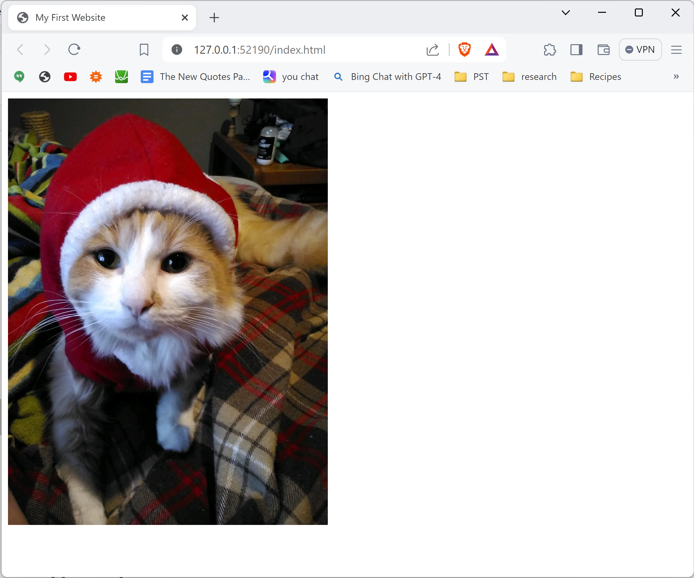

Install VSCode extensions
If you haven't already, please make sure to install the following extensions for Visual Studio Code:
- HTML CSS Support
- Live Server (Five Server)
- Auto Close Tag
- Auto Rename Tag
- Path Intellisense
To install extensions, open VSCode and click on the Extensions tab on the left of the interface. Use the search box to search the name of the extension and click Install when you see the extension you are looking for.
Why do we want these?
These extensions are not necessary for working with HTML and CSS in VSCode, but they make the process much easier! For example, with HTML CSS Support, you can just type the name of a tag and hit Enter and it will automatically expand into an opening and closing tag.
">You can also type ! and hit Enter to instantly set up the basic boilerplate code for an HTML page.

The most important feature we've installed however, is this button in the bottom right which says Go Live.
Clicking this will open your webpage on a local live server which will automatically reload whenever you make changes to your files, so you don't have to keep refreshing your browser every time you change something!
Relative File Paths
You may have noticed the other day when we hosted our websites that if your site had images on it, they didn't show up on the online version of your website. This is probably because your image tags look something like this:
<img src="C:\Users\sagep\OneDrive\Documents\Web Projects\MyFirstWebsite\best_image.png" alt="the best boy">In the example above, the src attribute contains what we call the absolute path to the image file. This specifies the exact location of the file on your computer. However, the online version of your site does not have access to your computer. All it sees are the files in your repository, so it doesn't know what to do with a path like this.
Instead, we need to use a relative path which specifies the file's location relative to your html file. We do this by starting the path with a single period, which represents the folder containing this html file.
<img src="./best_image.png" alt="the best boy">Intro to CSS
Experiment:
Try disabling the CSS for this page! Ctrl+Shift+I to open developer tools, then find the <style> element inside the <head> and delete it.
Learn CSS:
https://www.w3schools.com/html/html_css.asp
For CSS veterans:
If you know some CSS already, go to the W3Schools CSS tutorials page and find a section to work through that looks interesting to you.